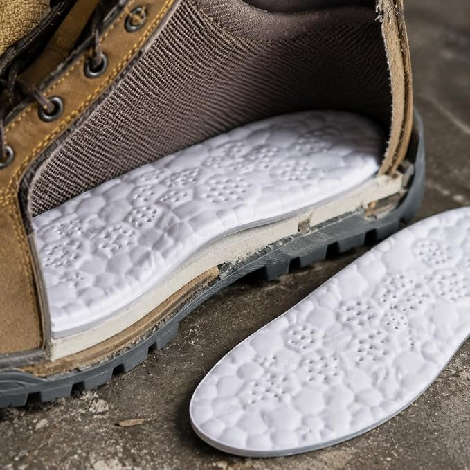

Branțuri Ergonomice pentru Încălțăminte, Set 2 Bucăți
Set de 2 branțuri ergonomice, cu suprafață texturată și orificii de ventilație, concepute pentru confort în timpul mersului și al statului în picioare.
Prețul și stocul sunt afișate conform catalogului furnizat. Confirmă disponibilitatea, cantitatea și condițiile comerciale înainte de comandă.
DETALII PRODUS
Descriere
Branțurile ergonomice pentru încălțăminte sunt accesorii practice, concepute pentru a îmbunătăți confortul în timpul mersului și al statului prelungit în picioare. Datorită suprafeței texturate și designului adaptat formei piciorului, acestea oferă o senzație plăcută la purtare și pot contribui la reducerea disconfortului asociat utilizării îndelungate a încălțămintei.
Suprafața cu textură de masaj prezintă zone reliefate, distribuite pe lungimea branțului, concepute pentru a oferi un contact diferit cu talpa piciorului. Designul ergonomic favorizează o așezare confortabilă în interiorul încălțămintei, fiind potrivit pentru persoanele care desfășoară activități ce presupun mers frecvent sau stat în picioare pentru perioade îndelungate.
Orificiile de ventilație integrate permit circulația aerului la nivelul suprafeței branțului, contribuind la menținerea unei senzații de prospețime în timpul purtării. Textura materialului și construcția flexibilă oferă un plus de confort, fără a necesita modificări ale încălțămintei.
Designul versatil permite utilizarea branțurilor în diferite tipuri de încălțăminte, precum pantofi sport, încălțăminte casual sau bocanci de lucru, în funcție de dimensiunile interioare ale acestora. Sunt potrivite atât pentru activitățile cotidiene, cât și pentru persoanele care lucrează în domenii precum depozitare, logistică, comerț, producție sau construcții.
Caracteristici principale
- Set de 2 bucăți: o pereche de branțuri pentru încălțăminte.
- Design ergonomic: conceput pentru confort în timpul mersului și al statului în picioare.
- Suprafață texturată: zone reliefate cu efect de masaj la contactul cu talpa.
- Orificii de ventilație: favorizează circulația aerului.
- Construcție flexibilă: permite integrarea în încălțămintea compatibilă.
- Utilizare versatilă: potrivite pentru pantofi sport, încălțăminte casual și bocanci de lucru.
- Culori: alb și verde, conform imaginilor.
- Întreținere practică: pot fi scoase din încălțăminte pentru curățare și aerisire.
Avantaje pentru comercializarea B2B
Branțurile ergonomice reprezintă un produs accesibil și practic, potrivit pentru distribuția en-gros și comercializarea prin magazine de încălțăminte, magazine de accesorii, platforme marketplace și magazine online.
Produsul se adresează unui public variat, de la persoane care petrec multe ore în picioare până la utilizatori care doresc un plus de confort în încălțămintea de zi cu zi.
Potențialul comercial este susținut de utilitatea zilnică, dimensiunile compacte, posibilitatea de comercializare individuală sau în pachete promoționale și compatibilitatea cu mai multe categorii de încălțăminte.
Conținut pachet: 1 pereche de branțuri ergonomice (2 bucăți).
Comandă și informații
Site-ul funcționează în regim de catalog B2B. Nu există plată online sau coș de cumpărături.
Discută pe WhatsApp →DIN ACEEAȘI CATEGORIE